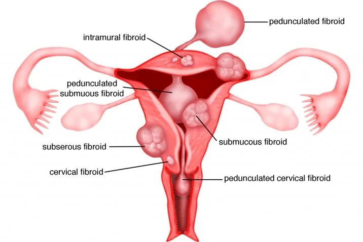

Expanded Nursing Uganda Explanation
Fibroids should be reviewed through safe maternal and newborn assessment, early recognition of danger signs, respectful communication and timely referral. Connect the definition to vital signs, bleeding, fetal or newborn wellbeing, patient education and local protocol requirements.
Contents, 14 sections (tap to expand)
01 **FIBROIDS (FIBROMYOMAS)**
Fibroids are benign / non-cancerous tumors that originates from the smooth muscle layer (myometrium) of the uterus. Fibroids are benign tumors arising from the smooth muscle of the uterus.
Other common names are :uterine leiomyoma, myoma, fibromyoma, fibroleiomyoma.
They occur usually after the age of 30 years and commonly in women who have not had children. Fibroids are more likely to arise in the body of the uterus than the cervix. They are composed of muscle and fibrous tissue may be single or multiple and may be from a pinhead size to enormous size.
02 Risk factors for uterine fibroids
- Age: Uterine fibroids are more common in women between the ages of 30 to 40 years.
- Parity: Women who have never given birth (nulliparous) or have had few pregnancies (low parity) are at a higher risk.
- Race: Uterine fibroids are more prevalent in individuals of African descent (negro or black) compared to those of Caucasian (white) ethnicity.
- Family History: If a woman has close relatives (such as mother, sister) with a history of uterine fibroids, her risk may be increased.
- Hyper-estrogenemia: Elevated levels of estrogen, a female hormone, can promote the growth of fibroids.
- Obesity: Being overweight or obese is associated with a higher risk of developing uterine fibroids.
- Early Onset of Menarche: Starting menstruation at a young age may be linked to an increased likelihood of fibroid development.
- Low Level of Vitamin D: Some studies suggest that insufficient vitamin D levels might be associated with a higher risk of uterine fibroids.
- Drugs (Estrogen Replacement Therapy): Long-term use of estrogen replacement therapy, particularly without progesterone, can be a risk factor for uterine fibroids.
03 Classes or types of Uterine fibroids
- Submucosal Fibroids: These fibroids grow into the uterine cavity. They are located just beneath the inner lining of the uterus (endometrium). Submucosal fibroids can cause various symptoms, including heavy menstrual bleeding and infertility.
- Intramural Fibroids (Interstitial): Intramural fibroids are the most common type and grow within the muscular wall of the uterus, known as the myometrium. They may expand and distort the shape of the uterus, leading to pain, pressure, and other symptoms.
- Subserosal Fibroids: These fibroids grow on the outside surface of the uterus. They can project outward and may become quite large. Subserosal fibroids can cause pelvic pain and pressure on nearby organs.
- Cervical Fibroids: Located on the cervix, the lower part of the uterus, cervical fibroids are relatively rare. They may cause symptoms such as pain and discomfort, and in some cases, they can affect fertility or lead to difficulties during labor.
- Fibroid of the Broad Ligament: This type of fibroid develops in the broad ligament, which is a supportive structure that helps hold the uterus in place within the pelvis. Broad ligament fibroids are relatively uncommon and may require specific management depending on their size and location.
04 Location or Sites of Uterine Fibroids
The locations or sites of uterine fibroids can be described as follows:
I. Subperitoneal (Under the Peritoneal Surface): These fibroids grow on the outer surface of the uterus, just beneath the peritoneum (the thin, protective layer covering the abdominal organs). They can extend and project outward, leading to symptoms such as abdominal discomfort and pressure.
II. Submucous (Bulging/Protruding into the Endometrial Cavity): Submucous fibroids grow into the uterine cavity, bulging and protruding into the endometrial lining. They can cause heavy menstrual bleeding, irregular periods, and even affect fertility.
III. Pedunculated Fibroids: These fibroids are attached to the uterus by a narrow stalk or pedicle that contains blood vessels. Pedunculated fibroids can be either subserosal or submucous, depending on their location.
IV. Intramural (Within the Wall of the Uterus or Centrally within the Myometrium): Intramural fibroids are the most common type and grow within the muscular wall of the uterus (myometrium). They can cause the uterus to enlarge and lead to symptoms such as pelvic pain and pressure.
V. Subserosal (At the Outer Border of the Myometrium): Subserosal fibroids grow on the outer surface of the uterus, just beneath the serosa (the outermost layer of the uterus). These fibroids can be large and cause pelvic discomfort.
VI. Cervical Fibroids: Cervical fibroids are located on the cervix, the lower part of the uterus that connects to the vagina. They are relatively rare and can cause symptoms similar to other types of fibroids, such as pain and pressure.
- Types of Uterine Fibroids: The types of uterine fibroids refer to the different categories or classifications based on their specific characteristics and growth patterns. The main types of uterine fibroids are: a. Submucous (bulging into the endometrial cavity) b. Intramural (within the wall of the uterus or centrally within the myometrium) c. Subserosal (at the outer border of the myometrium) d. Pedunculated (attached to the uterus by a narrow stalk or pedicle) e. Cervical (located on the cervix) These types help healthcare professionals understand the nature of the fibroids and how they may be affecting the uterus and surrounding structures.
- Location of Uterine Fibroids: The location of uterine fibroids refers to the specific sites within or around the uterus where the fibroids are situated. The different locations are: a. Subperitoneal (under the peritoneal surface) b. Bulging/Protruding into the endometrial cavity (submucous) c. Attached to the uterus by a narrow pedicle containing blood vessels (pedunculated) d. In the wall of the uterus or centrally within the myometrium (intramural) e. At the outer border of the myometrium (subserosal) f. Cervical (located on the cervix) The location of the fibroids is crucial because it determines their proximity to other organs, how they may impact the uterine cavity or the cervical region, and how they might be approached for treatment.
05 Changes (degenerative) that can take place in the fibroid
Degenerative changes in uterine fibroids refer to alterations in the fibroid tissue that can occur over time or due to specific circumstances.
- Red Degeneration: This type of degeneration often occurs during pregnancy. It happens when the fibroid’s blood supply is disrupted, leading to necrosis (cell death) of the fibroid tissue. The fibroid becomes reddish and soft, with a “beefy” appearance.
- Atrophy: After menopause, when hormone production decreases, fibroids may undergo atrophy. Atrophy refers to a decrease in size or wasting away of the fibroid due to the reduction in hormonal stimulation.
- Hyaline Degeneration: In hyaline degeneration, the fibroid tissue becomes soft, and the muscle fibers are replaced by a homogenous, structureless material.
- Parasitic Fibroid: This occurs when the blood supply to a fibroid is cut off due to torsion (twisting) of its pedicle. The fibroid then establishes a new blood supply from the surrounding tissues.
- Cystic Change: Following hyaline degeneration, the fibroid’s tissue can become fluid-filled, giving it a cystic appearance similar to an ovarian cyst.
- Fatty Change: The muscle fibers of the fibroid are replaced by fat tissue.
- Calcification: In calcification, calcium salts are deposited in the fibroid, causing it to harden and become similar to a stone.
- Eggshell Fibroid (Calcification): In this type of calcification, the calcium deposits form on the outside of the fibroid, leaving the inside with its usual consistency.
- Womb Stone: This term describes a fibroid that is entirely deposited with calcium salts, causing the entire fibroid to become hardened like a stone.
06 Causes of Uterine Fibroids.
Causes of uterine fibroids are not fully understood, but research suggests that hormones and genetics play significant roles in their development. Here’s a more detailed explanation:
- Hormones: The hormones estrogen and progesterone, which regulate the menstrual cycle, have a close association with the growth and development of uterine fibroids. During each menstrual cycle, the lining of the uterus (endometrium) thickens under the influence of estrogen and progesterone. These hormones also seem to stimulate the growth of fibroids. As a result, fibroids often grow and enlarge during the reproductive years when hormone levels are at their highest. Conversely, as hormone production decreases during menopause, fibroids tend to shrink and become less symptomatic.
- Genetics: There is evidence to suggest that genetics can play a role in the development of uterine fibroids. Women with a family history of fibroids are at a higher risk of developing them themselves. This suggests that certain genetic factors may predispose individuals to fibroid formation.
- Other Factors: Although hormones and genetics are the main factors associated with uterine fibroids, some other factors may contribute to their development or growth. These factors include obesity, race (fibroids are more common in women of African descent), and dietary factors.
07 Clinical Presentation of Uterine Fibroids.
- Painful and Prolonged Menstrual Periods: Fibroids can cause heavy and prolonged menstrual bleeding, leading to painful periods (dysmenorrhea).
- Vaginal Bleeding after Menopause: Postmenopausal women with fibroids may experience vaginal bleeding, which is abnormal after menopause.
- Difficulty with Urination and Constipation: Large fibroids or fibroids pressing on the bladder can cause frequent urination or difficulty emptying the bladder. Fibroids pressing on the rectum can lead to constipation.
- Pressure in the Pelvic Area: Women with fibroids may feel pressure or heaviness in the lower abdomen or pelvis.
- Fullness or Pressure in the Belly: Enlarged fibroids can cause the abdomen to appear distended and feel full.
- Lower Back and Leg Pain: Some women may experience lower back pain or pain in the legs due to the pressure exerted by fibroids on surrounding structures.
- Pain During Sex (Dyspareunia): Fibroids can cause pain or discomfort during sexual intercourse.
- Difficulty in Getting Pregnant (Infertility): Depending on their size and location, fibroids can interfere with the implantation of a fertilized egg or lead to difficulties in conception.
- Pressure Symptoms: Fibroids can create pressure on the bladder, leading to increased frequency of urination. They can also exert pressure on the rectum, causing constipation. Additionally, pelvic vein pressure can lead to hemorrhoids and varicose veins.
- Acute Degeneration: In some cases, fibroids may undergo acute degeneration, which can cause severe pain.
- Enlargement of the Abdomen: Large fibroids or multiple fibroids can cause the abdomen to become visibly enlarged due to their projection into the abdominal cavity.
08 Diagnosis and Investigations
- History Taking: A comprehensive medical history is taken to understand the patient’s symptoms, menstrual patterns, reproductive history, and any relevant medical conditions. This helps in assessing the likelihood of uterine fibroids and guides further evaluation.
- Physical Examination: A physical examination is conducted to assess general health and look for specific signs related to uterine fibroids. This may include checking for signs of chronic anemia (pallor) due to heavy menstrual bleeding.
- Abdominal Examination: An abdominal examination is performed to detect any large pelvi-abdominal swelling, which can be associated with significant fibroid growth.
- Pelvic Examination: During a pelvic examination, the healthcare provider assesses the size, shape, and position of the uterus. Uterine fibroids may cause the uterus to be symmetrically or asymmetrically enlarged. A speculum examination may also reveal the presence of fibroid polyps.
- Investigations: Various diagnostic tests are used to confirm the presence of uterine fibroids and assess their characteristics. These investigations may include: Pregnancy Test : To rule out pregnancy as a cause of symptoms.
- Full Blood Count (FBC) and Iron Studies : To check for anemia, which can result from heavy menstrual bleeding caused by fibroids.
- Pelvic Ultrasound (U/S) : An ultrasound is a common imaging test used to visualize the uterus and detect fibroids. It is a non-invasive and relatively simple procedure.
- Saline Hysterosonography : This procedure involves injecting saline into the uterus during an ultrasound to enhance visualization of the uterine cavity and identify submucous fibroids.
- Hysterosalpingogram (HSG): An HSG is an X-ray procedure that uses contrast dye to visualize the uterine cavity and fallopian tubes. It can help detect intrauterine fibroids.
- Transvaginal Ultrasound (TVUSS) : This type of ultrasound involves inserting a small probe into the vagina for a clearer view of the pelvic organs, which can be especially useful in obese patients.
- Hysteroscopy : A hysteroscope, a thin, lighted instrument, is used to directly visualize the uterine cavity, enabling the identification and removal of submucous fibroids.
- Bimanual Examination: A two-handed examination of the pelvic organs to assess the size, shape, and mobility of the uterus and detect any abnormal masses.
- MRI (Magnetic Resonance Imaging) : Although not always necessary, MRI is highly accurate in providing detailed information about the size, location, and number of fibroids.
09 **Management of Fibroids.**
Most fibroids do not require treatment unless they are causing symptoms. After menopause, fibroids usually shrink, and it is unusual for fibroids to cause problems. The choice of management depends on several factors:
- Age
- Parity
- Size and location of fibroids
- Desire for uterine preservation
- If need for more children
For example:
- Multiple myomas and completed childbearing benefit from hysterectomy.
- Nulliparous women may undergo myomectomy.
- Submucosal myomas can be treated with hysteroscopic resection.
- Subserosal pedunculated myomas can be removed through laparoscopic resection.
Emergency Treatment:
- Blood transfusion is given to correct anemia.
- Emergency surgery is indicated for infected myoma, acute torsion, and intestinal obstruction.
Medical Management:
- Nonsteroidal anti-inflammatory drugs (NSAIDs) such as ibuprofen can help manage pain.
- Antifibrinolytic agents like tranexamic acid may reduce menorrhagia.
- Low-dose birth control pills or an intrauterine device with a slow-release hormone (Mirena) can control heavy menstrual bleeding.
- Haematenics like ferrous sulphate or folic acid are used to improve hemoglobin levels in cases of Menorrhagia.
- Levonorgestrel intrauterine devices effectively limit menstrual blood flow and improve other symptoms with minimal side effects.
- Gonadotropin-releasing hormone (GnRH) agonists like Lupron and Synarel can temporarily reduce estrogen and progesterone levels, leading to fibroid shrinkage.
- Mifepristone (25-50mg twice weekly) is a progesterone receptor inhibitor that can reduce fibroid size and bleeding.
- Danazol, an androgen, interrupts ovulation.
Surgical Management:
- Myomectomy : Surgical removal of one or more fibroids, often recommended for women who want to preserve fertility.
- Hysterectomy : Removal of the uterus, suitable for women with multiple myomas and completed childbearing.
- Endometrial ablation: Removal of the uterine lining.
- Uterine artery embolization: Limiting blood supply to the myoma by injecting polyvinyl particles via the femoral artery.
- Radiofrequency ablation: Shrinking fibroids by inserting a needle-like device into the fibroid and heating it with radiofrequency.
Indications:
- Myomectomy : Young women who want more children, small or few fibroids, heavy or prolonged bleeding.
- Hysterectomy : Possible malignant changes, large or numerous fibroids, desire to limit family size, or approaching menopause.
This involves providing care for patients undergoing surgery of gynecological procedures.
1. Admission and History Taking:
- Obtain personal, medical, social, and gynecological history.
- Conduct a physical examination, including vital signs (temperature, respirations, blood pressure, and pulse), head-to-toe examination to rule out anemia, dehydration, jaundice, and vaginal examination to assess any abnormalities.
- General assessment by the gynecologist.
2. Informed Consent:
- Explain the reasons for the operation, its benefits, risks, and expected results to the patient and involve the partner if necessary.
3. Investigations:
- Conduct various tests, including urinalysis, hemoglobin (HB) level, blood grouping and cross-match, abdominal ultrasound scan, urea and electrolytes, INR/PT (International Normalized Ratio/Prothrombin Time), and ECG/ECHO if required.
4. Patient Education:
- Educate the patient about the surgery, its purpose, potential complications, and side effects of anesthesia.
- Provide reassurance and counseling to relieve anxiety.
5. Preparing for Surgery:
- Ensure the patient fasts from food and drinks on the day of the operation.
- Arrange for IV line insertion, blood booking in the laboratory, and catheterization of the patient.
- Administer pre-medications as prescribed.
6. Assisting with Theatre Preparation:
- Help the patient change into theatre gown.
- Continue providing counseling and emotional support.
- After the operation, prepare the post-operative bed for the patient.
- Obtain reports from the surgeon, recovery room nurses, and anesthetists.
- Wheel the patient to the ward.
- Receive the patient in a warm bed, keeping her in a flat position, or turning her to one side depending on the surgery type (supine for abdominal surgery or a comfortable position for vaginal surgery).
Observation:
- Monitor the patient closely, taking vital signs regularly (every ¼ hr for the first hour and every ½ hr for the next hour until discharge).
- Observe temperature, pulse, respiration, blood pressure, and signs of bleeding or edema at the surgical site.
- Check the IV line and blood transfusion line if applicable.
Upon Consciousness:
- Gently welcome the patient from the theater, explain the surgery, and assist with face sponging.
- Provide a mouthwash and change the gown.
Medical Treatment:
- Administer analgesics, such as Pethidine 100mg every 8 hours for 3 doses, and switch to Panadol to complete 5 days.
- Prescribe antibiotics, such as ampicillin or gentamicin, as ordered.
- Offer supportive care with vitamins like vitamin C, iron, and folic acid.
- Monitor and care for the wound in case of abdominal surgery, leaving the wounds untouched if bleeding occurs and re-bandaging if necessary.
Nursing Care:
- Assist the patient with hygiene, including bed baths and oral care.
- Allow the patient to feed herself as soon as she is able and provide plenty of fluids.
- Encourage regular bowel and bladder emptying, offering assistance as needed.
- Initiate chest and leg exercises to avoid swelling and bleeding in the wound.
- Gradually increase the exercise routine to prevent deformities and contractures.
Vaginal Surgery Management:
- Insert a vaginal pack to control hemorrhage and inspect it frequently for severe bleeding.
- Apply vulval padding after pack removal until bleeding stops, changing it when necessary to prevent infections.
- Swab or clean the vulva at least every 8 hours to prevent infection.
Advice on Discharge:
- For Myomectomy patients, advise avoiding conception for 2 years following the operation and delivering via cesarian section.
- For hysterectomy patients, inform them that they will not conceive again or have periods.
- Recommend abstaining from sexual intercourse for about 6 weeks and avoiding douching. Vaginal bleeding may persist for up to 6 weeks.
10 **Complications of Uterine Fibroids:**
- Menorrhagia (heavy menstrual bleeding)
- Premature birth, labor problems, and miscarriage
- Infertility
- Twisting of the fibroids
- Anemia
- Urinary tract diseases
- Postpartum hemorrhage
Complications during pregnancy and labor may include:
- Antepartum hemorrhage (placenta previa, placental abruption)
- Abortion
- Fetal restricted growth
- Malpresentation
- Cesarean section
- Labor dystocia
- Premature labor
- Uterine inertia leading to postpartum hemorrhage
- Obstructed labor
- Subinvolution of the uterus with increased lochia.
11 Nursing Uganda Clinical Lens
Use Fibroids as a practical nursing topic, not only a memorized definition. Read the topic through the safety of two patients: the mother and the fetus or newborn.
- What to understand first: define fibroids, identify the normal or expected pattern, then explain what changes when the patient is unwell.
- Why it matters in care: the nurse must recognize risk early, explain findings clearly, document accurately and know when to escalate.
- How to revise it: connect each point to assessment, nursing diagnosis or care problem, intervention, rationale and evaluation.
12 Assessment Guide
- Maternal vital signs, bleeding, pain, contractions, uterine tone and danger signs.
- Fetal or newborn wellbeing, feeding, temperature, breathing and activity.
- History of pregnancy, parity, medications, allergies, investigations and referral risks.
13 Nursing Priorities, Rationales and Outcomes
- Recognize danger signs early and escalate without delay.
- Provide respectful communication, privacy, infection prevention and clear documentation.
- Teach the mother what to monitor at home and when to return urgently.
The rationale for these priorities is patient safety: nursing actions should prevent deterioration, reduce discomfort, support recovery and create clear evidence for the next caregiver.
- Expected outcome: Mother and baby remain stable, danger signs are acted on early, and the family understands follow-up instructions.
14 Patient Teaching and Revision Check
- Explain fibroids in simple language the patient or caregiver can repeat back.
- Teach warning signs, medicine or follow-up instructions, hygiene or lifestyle points where relevant.
- For exams, prepare a short answer using: definition, causes or risk factors, signs, assessment, management, complications and prevention.
- For ward practice, document baseline findings, actions taken, patient response and the plan for review.
Illustrations and Diagrams (6)



Related Video Lectures
Watch nursing lecture videos on YouTube for this topic. Opens in a new tab.
Watch on YouTubeExternal link: YouTube may use its own cookies and terms. Nursing Uganda is not affiliated with YouTube.